Nos Produits en Acacia
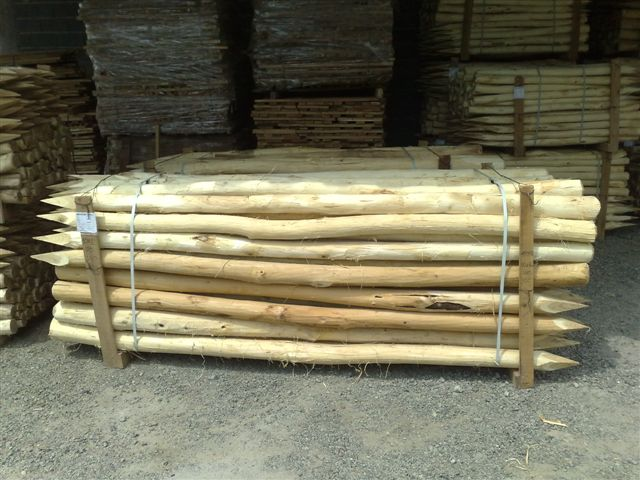
Poteaux écorcés Acacia
Dimensions courantes : Diam : 6/8 à 20/24 cm Diam. À mi longueur.
Longueur : 1 à 6 m .
Fournisseurs : +/- 12 Possibilité en FSC et en PefC
Origine : Hongrie Slovaquie France
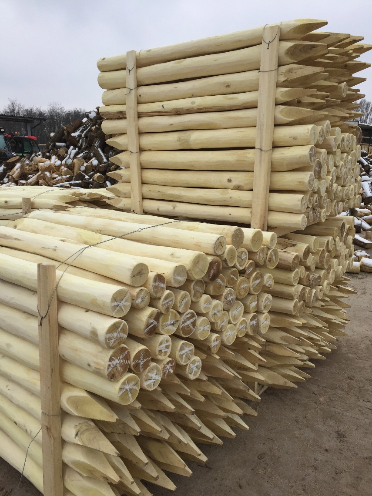
Poteaux écorcés poncés
(l’aubier est poncé) Dimension courantes : Diam : 6/8 à 20/24 cm (Diam. à mi longueur) .
Longueur : 1 à 6 m.
Exceptionnellement: Diamètre jusqu’à 40 cm Longueur jusqu’à 12 m
Poteaux écorcés poncés
Fournisseurs : +/- 8 Possibilité en FSC
Origine : Hongrie Slovaquie
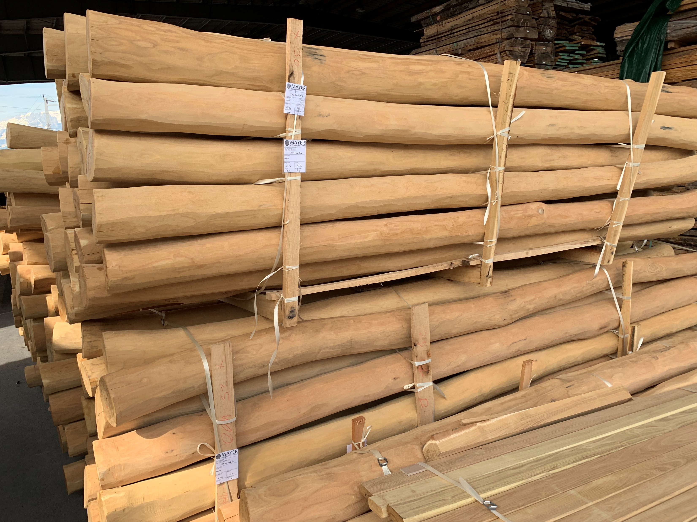
Poteaux déa ubiéré
(l’aubier est poncé)Dimension courantes : Diam : 6/8 à 20/24 cm ( Diam. À mi longueur) .
Longueur : 1 à 6 m.
Exceptionnellement: Diamètre jusqu’à 40 cm Longeur jusqu’à 12 m
Poteaux déa ubiéré
Fournisseurs : +/- 8 Possibilité en FSC
Origine : Hongrie Slovaquie
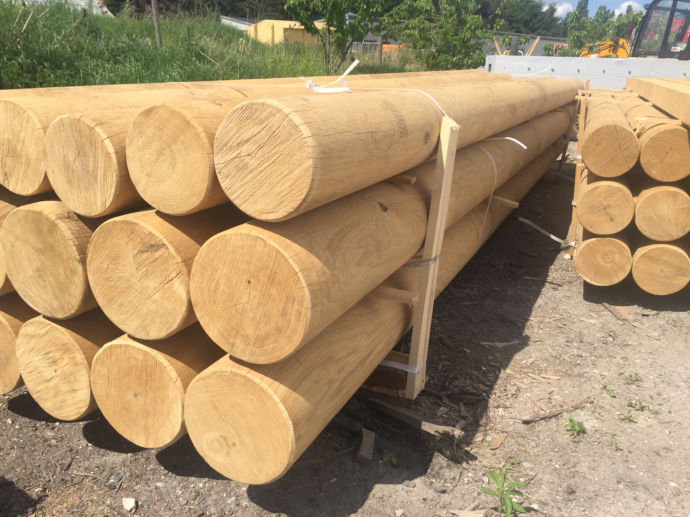
Poteaux fraisés en acacia
Diamètre de 4 à 20 cm Longueurs de 0,4 à 2,5 m Prix : 2000 le m3
Fournisseurs : +/- 3 Possibilités en PeFC
Origine : Hongrie , Italie, France
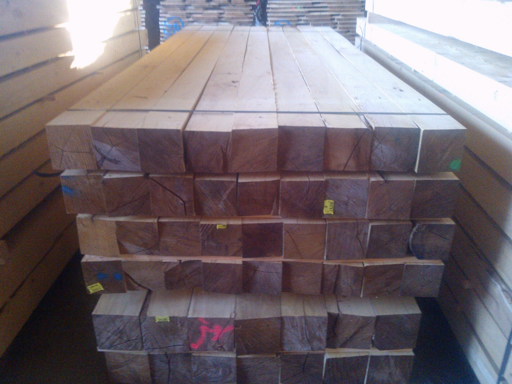
Poteaux carrés / Poutres En acacia
Sections : de 4x4 à 15 x 15 Longueurs courantes jusqu’à 3,0 mPrix de 1500 à 2500 euro /m3
Fournisseurs : +/- 10 Possibilité FSC PeFC
Origine : Hongrie; Italie ; France
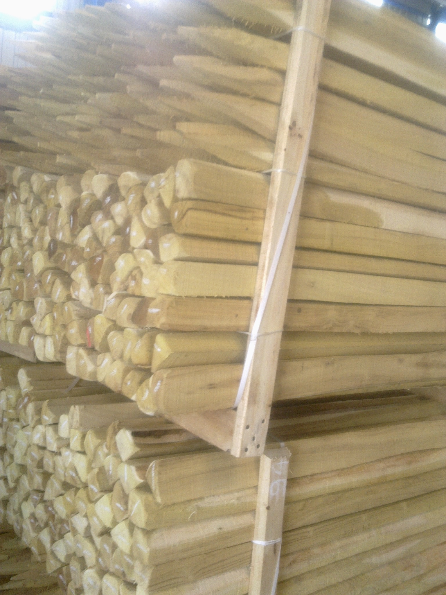
Piquet sciés ou fendus « Quart de rond » En Acacia
Poteaux sciés ou fendu. Ecorcé ou non écorcés Dimensions courante 1, 5 à 2,5 m
Possibilité FSC et PeFC
Origine : Hongrie, Croatie, France
Fournisseurs : +/- 10 Possibilité FSC et PeFC
Origine : Hongrie, Croatie, France
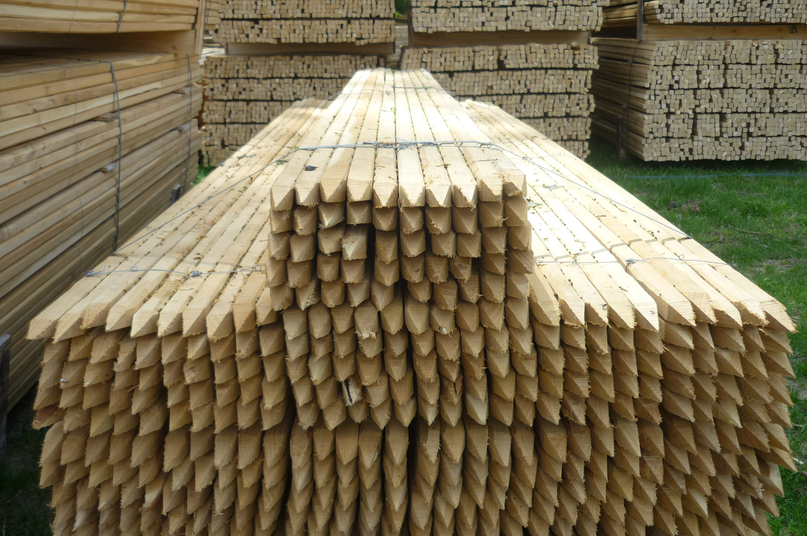
Piquets sciés « marquant carrés »Acacia
Section les plus fréquentes : 22x22 m, 25x25 mm, 30x30 mm.
Longueur de 0,5 à 1,5 m.
Origine Hongrie Pas de PeFC possible.
Fournisseurs : +/- 14 Certifiés : 2
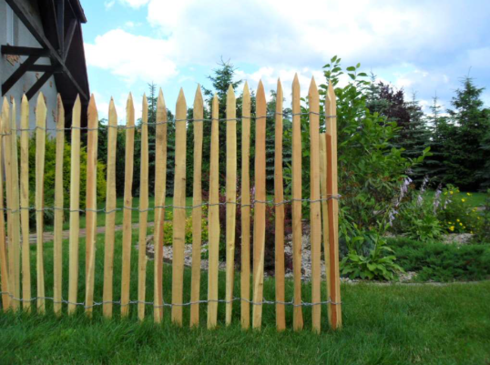
Ganivelle en acacia
Se définit par la hauteur et l’espacement entre les échalas. Les hongrois proposent des types d’échalas différents – sciés, écorcés…
Fournisseurs : 1
Origine Hongrie
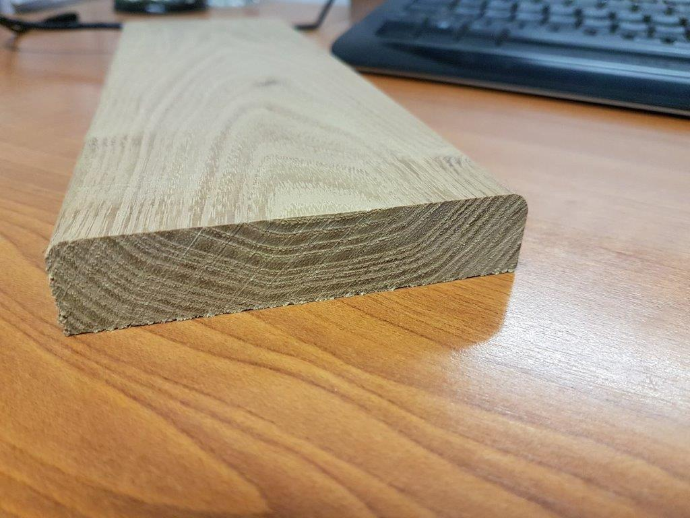
Lames de terrasse massives
Rainurées ou non Longueur des pièces entre 1 m et 2,5m Prix de 56 à 72 €/m²
Fournisseurs : +/- 10 Possibilité PeFC et 100%
Origine : hongrie, France
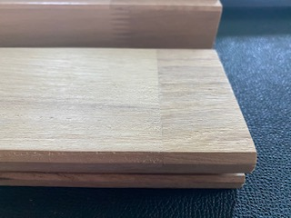
Origine : Roumanie, Allemagne, Allemagne
Joint transversal – avant ponçage
Joint parallèle dit invisible
Lames de terrasses aboutées
Longueur jusqu’à 6 m Largeurs de 80 mm à 120 mm 2 technologies Joint transversal Joint invisible
Prix : 50 à 65 €uro / m2
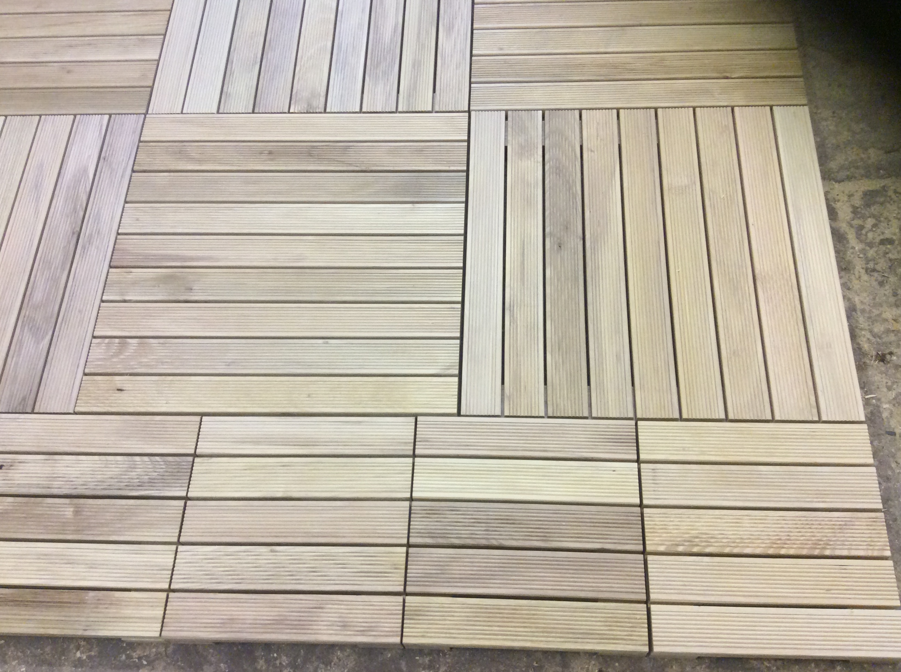
Dalles en acacia
Dimensions standard 50x50 27x27 100x100 cm Possibilités PeFC 100% Français
Fournisseurs : 2 Certifiés : 1
Origine: France Hongrie
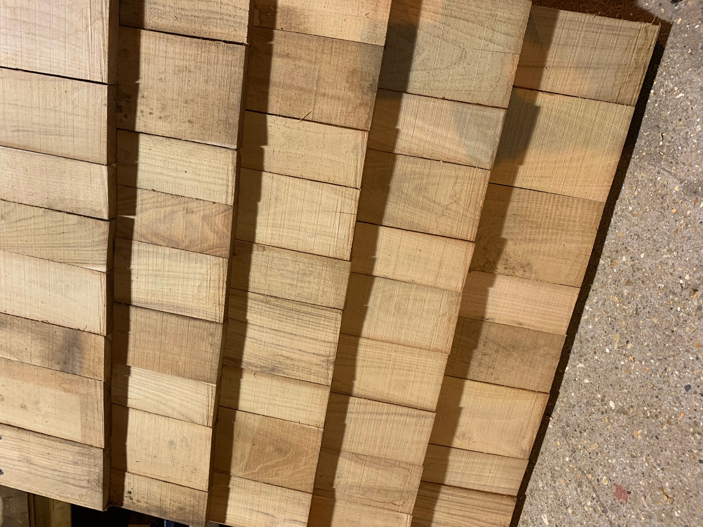
Tavaillons en acacia
Largeurs et longueurs usuelles Largeur 7,5 cm, 10 cm, 12,5 cm
Longueur : 50 cm
Prix rendu par camion complet : 25m3 soit 600 m² couverts. 1300 € le m3 soit 59 € le m2 couvert
Fournisseurs : 1 Origine : Hongrie
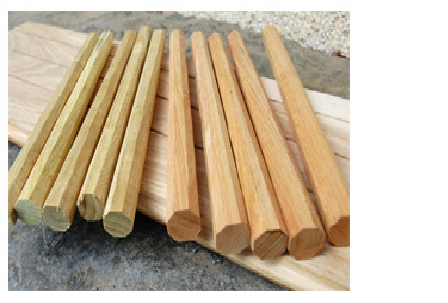
Chevilles en acacia
Dimension en mm
16x180, 16x200, 16x220, 16x250
18x180, 18x200, 18x220, 18x250, 18x300
20x180, 20x200, 20x220, 20x250, 20x300
Possibilité 100% Français
Fournisseurs : 1
Origine : Slovénie , France
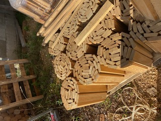
Tours de parterre En acacia
Origine : Hongrie
Dimensions H 20 cm x L 200 cm, H 30 cm x L 200 cm, H 40 cm x L 200 cm
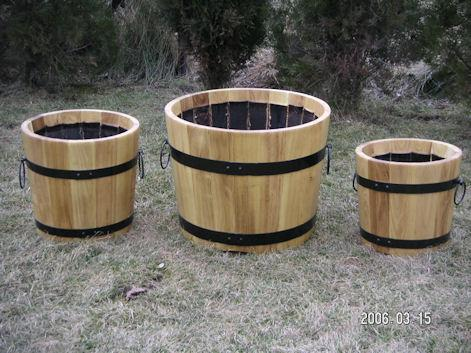
Bacs à fleurs ronds en acacia
Origine : Hongrie
Dimensions :
30 x 30 cm, 35 x 35 cm, 40 x 40 cm, 45 x 45 cm, 50 x 50 cm, 50 x 60 cm
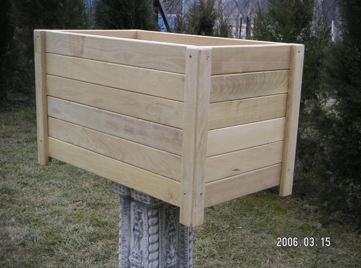
Bacs à fleurs carrés en acacia
Origine : Hongrie
Dimensions :
30 x 60 x h30 cm, 30 x 80 x h30 cm, 30 x 100 x h30 cm
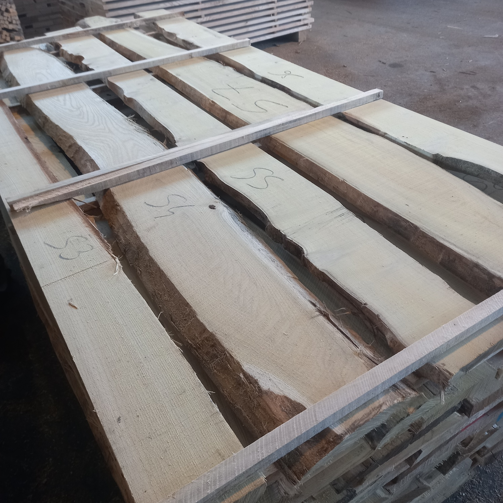
Plots d’acacia
Dimensions habituelles : Diamètre mini : 28 cm
Longueur mini : 2,0 m
Possibilités : FSC , PeFC Origine : Hongrie, Italie, Espagne, Croatie, France
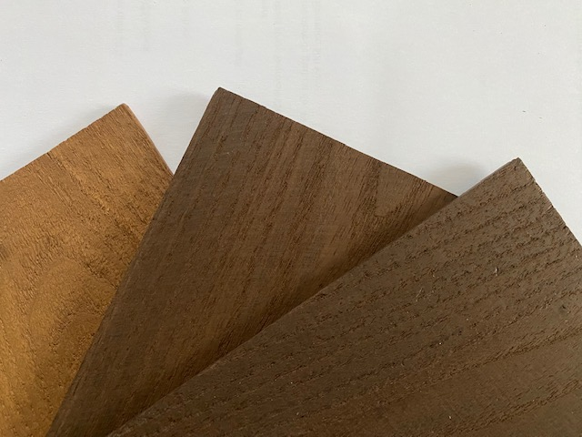
Acacia étuvé
Formes : Parquet massif Lames de 4 mm pour parquet collé Divers degrés d’étuvage ( couleur ) possibles.Produit pour l’intérieur parquet , lambris.
Fournisseurs : 2 Origine : Hongrie, Autriche, Italie
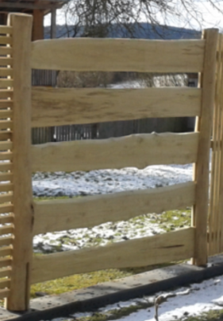
Planches écorcés poncées
Pour des construction à aspect rustique. Le plus souvent en combinaison avec des poteaux écorcé poncés.
Fournisseurs : 2
Origine : Hongrie.
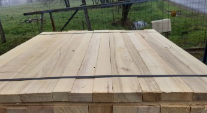
Merrains en Acacia
Origine : Hongrie.
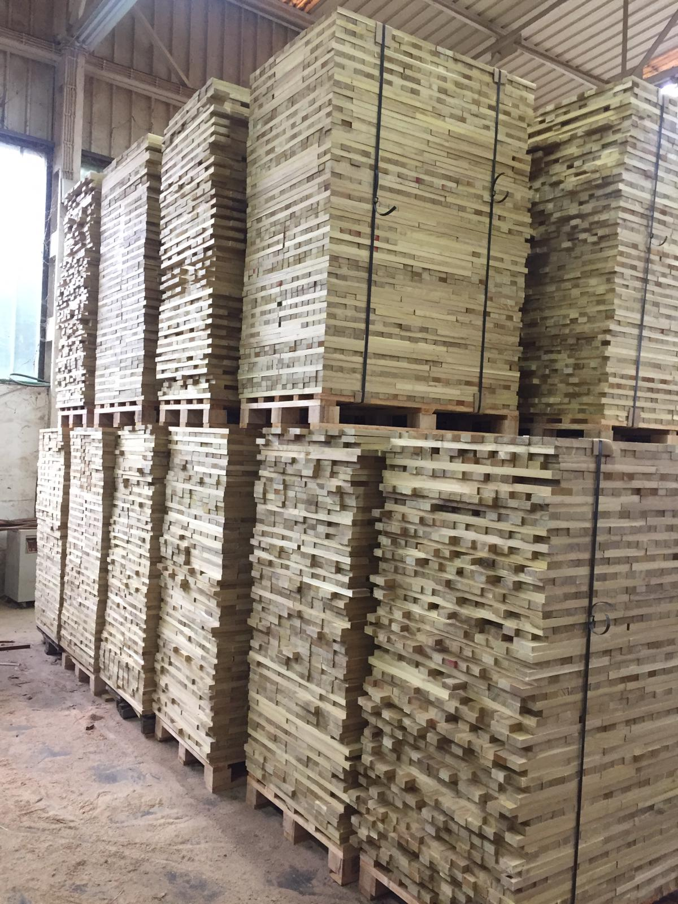
Frises et sciage sur liste d’acacia
Dimensions habituelles : Largueurs jusqu’à 12 /13 cm Longueur jusqu’à 250 cmPossibilité de sec échoir.
Fournisseurs : 8 Possibilités : FSC , PeFC Origine : Hongrie, Italie, Croatie, France